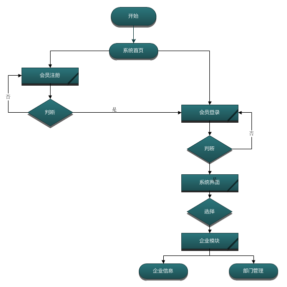

项目进度
1．系统功能分析
-
模块详情
对系统做到全方面的分析，包括：开发平台与环境熟悉，准备的技术与建议参考资料，数据库设计，功能模块了解。
-
相关资料
-
任务模块
1．开发平台与环境
系统环境：支持Jdk6.0+，Tomcat6.0+
开发工具：Eclipse/MyEclipse
数据库： MySql5.6
软件架构：B/S 架构，MVC三层开发 -
2．准备与建议
1. 技术要求
(1) 深刻理解JavaWeb相关技术，熟练使用tomcat、jboss、weblogic等应用服务器至少一种，熟练掌握标准sql语句使用。
(2) 具体技术有：JavaSE、Jdbc、Servlet、Jsp、El、Jstl、Html、Css、JavaScript、JQuery 等。
(3) 推荐在线学习平台：http://www.geminno.cn。
2. 资料素材
《Java编程思想》，《深入分析Java Web技术内幕》，《JavaScript高级编程》，《Ajax基础教程》，《设计模式——可复用的面向对象设计》，《锋利的jQuery》 -
3．数据库设计
包括分析实体，标识实体属性，找出实体之间关系，绘出E-R图，使用范式规范化，建库，建表，建约束，输入测试数据。
-
4．功能模块说明
本工具平台，具体包括如下几个主要功能：
1. 注册、登陆模块：用户在线注册账号，登录后可以进入系统首页
2. 企业模块：主要是管理企业相关的部门信息。包含：企业信息、部门管理等。
3. 个人模块：主要统计个人开销记录。包含：个人信息、个人统计等。
4. 统计中心：主要针对企业进行统计，可以根据不同时间、不同部门、不同类型等统计。 -
5．完成需求说明书
此任务是以后毕业论文中的一部分，现在提交完成，以后的事情。你懂得。。。。。。。。。 （提示：可下载需求说明书模板进行书写）
2．编程规范说明
-
模块详情
1. 方便代码的交流和维护。
2. 不影响编码的效率，不与大众习惯冲突。
3. 使代码更美观、阅读更方便。
4. 使代码的逻辑更清晰、更易于理解。 -
任务模块
1．术语定义
1. Pascal 方法：将标识符的首字母和后面连接的每个单词的首字母都大写。可以对三字符或更多字符的标识符使用。例如：BackColor
2. Camel 方法：标识符的首字母小写，而每个后面连接的单词的首字母都大写。例如:backColor -
2．包结构的命名规范
包结构：cn.公司名.项目名.三层结构划分、工具包、领域模型包
例如：
cn.geminno.count.web
cn.geminno.count.service
cn.geminno.count.dao
cn.geminno.count.domain
cn.geminno.count.utils
3．注册登录模块
-
模块详情
注册分为个人注册和企业注册，只有登陆成功后，才能使用工具统计。
-
任务模块
1．实现思路
1. 注册:
(1) 游客点击注册按钮，弹出注册页面
(2) 填写信息，确认提交
(3) 后台接受提交数据，调用dao层验证信息是否有效
(4) 注册成功，自动登录；注册失败，继续注册
2. 登录:
(1) 用户点击登录按钮，弹出登录页面
(2) 填写用户名、密码等信息
(3) 后台接受登录信息，调用dao层判断登录是否成功
(4) 登录成功，进入我的地盘；登录失败，继续登录 -
2．技术难点解析
验证码:现在几乎所有网站或系统，为了保证项目的安全性，通常都要使用到验证码；特别是在进行注册、登陆的时候，它能够防止程序恶意刷新提交。验证码实现的时候要注意两个方面：
1. 后台实现
(1) 通过随机数生成验证码值，并且把数值存放在session 的域内。
(2) 使用swing画成一张图片，把图片以输出流的方式，反馈给前台。
2. 前台实现
(1) 在页面中通过<img src=” ”>标签，引入验证码图片
(2) 在更换验证码的时候，需要在请求链接中加入随机数，防止浏览器缓存。
4．企业模块
-
模块详情
本模块主要包括：企业信息、企业部门管理等多个内容。

提示：该模块主要是为了后面针对企业进行统计的时候，做一些设置。 -
任务模块
1．实现思路
企业会员登陆成功后，可以修改、完善企业的部分信息，同时也能够对企业的部门进行增删改查。
这边的部门管理主要是为了后面针对企业统计进行准备。 -
2．技术难点解析
1.分页实现：主要的目的是为了提高系统性能和页面展现友好，目前主要分为两种方式：
(1) 逻辑分页：一次性从数据库拿出多个数据，缓存在内存中，每次根据分页请求取出当前页面数据。
*** 一般逻辑分页用在数据量较少的时候。
(2) 物理分页：根据分页请求从数据库中取出当前页的数据，该技术是由数据库自身提供，程序只需要提供要求即可。
*** 在数据量比较大的时候，一定要采用物理分页，否则会导致数据库吞吐量过大，性能急剧下降，甚至宕机的可能。
注意:项目较为庞大的时候，一般采用两者有效结合的方式，一次性从数据库取出相当量的数据（不是全部），然后再根据分页请求，响应当前页面数据。
2.分页模型：为了能够更好描述分页请求的信息和其它地方的复用，通常会抽取出分页模型，以避免代码重复冗余。在抽取模型的时候，要注意问题的归纳、分析，一般抓住不常变的信息，灵活处理变化的信息，例如：
不变的：一页显示几条记录，总记录数，
变的：当前页，总页数
抽取出来的模型对象PageModel：
一页显示几条记录：pageContent，
当前页：pageCurrent，
总记录数：totalNum，
总页数：totalPage=totalNum/pageContent (根据需要是否 +1)
5．个人模块
-
模块详情
主要是完善会员个人的详细的信息，特别是记录了会员学了哪些课程，达到了什么样水平，想学哪些课程等。系统根据会员的信息和对学员学习轨迹的跟踪、分析，推荐出更有针对性的课程。
-
任务模块
1．实现思路
会员登录后，可以直接进入个人模块，在该模块内有完善个人信息的功能，也能够根据自己的开销记录进行统计，一般包括：按时间统计，类型统计等。
-
2．技术难点解析
1. 分页技术见上章节分析
2. Excel导出：参见【项目相关技术资料】java生成excel.doc
3. Pdf导出：参见【项目相关技术资料】java生成pdf.doc
4. 图形生成：参见【项目相关技术资料】java生成统计图形.doc
6．统计中心模块
-
模块详情
企业会员登录后，可以查询统计模块，该模块包括：按时间统计，按部门统计，按类型统计等多种方式。
-
任务模块
1．实现思路
该功能主要是针对企业日常开销进行统计的。企业会员登录后，设置好部门等相关信息后，可以到统计中心查看各方面的统计信息，例如：企业统计，部门统计，类型统计，也可以根据不同时间段进行统计等。
-
2．技术难点解析
1. 分页技术见上章节分析
2. Excel导出：参见【项目相关技术资料】java生成excel.doc
3. Pdf导出：参见【项目相关技术资料】java生成pdf.doc
4. 图形生成：参见【项目相关技术资料】java生成统计图形.doc
7．扩展性功能
-
模块详情
1. 同行了解
(1) 能够根据大数据查询同行其它的粗略统计。
2. 教你节省
(1) 提供节省开支方案。 -
任务模块
暂无
8．提交项目成果
-
模块详情
1 提交项目完整代码 (提示：包括源代码，数据库脚本，或者数据库文件)
2 提交项目演示视频 (提示：通过录屏软件，录制成mp4或是其它可播放格式，演示项目全部模块的过程，参考下载链接)
3 提交项目相关文档 (提示：包括需求说明书，用户操作手册，数据库设计文档，参考下载文档格式)
4 规范化相关文件的文件名 -
相关课程
-
相关资料
-
任务模块
暂无
9．完成毕业论文
-
模块详情
1.按照学校要求的毕业论文格式完成自己的毕业论文。
2.提交毕业论文到项目工场，学习暂告结束。 -
任务模块
暂无